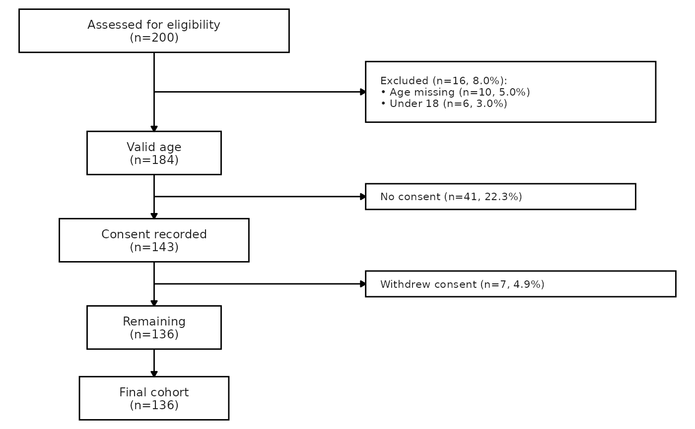

Produces a CONSORT-style flow diagram (as used in clinical trial and
cohort study reporting) summarising participant flow through a cf_flow
pipeline. The main vertical flow shows the number of participants
entering the study and surviving each step (or category, when
show_categories = TRUE), while exclusions at each step branch off to
the side as a box giving the count, percentage, and (for categorised
steps) the individual exclusion reasons.
Usage
as_consort_diagram(
flow,
show_categories = TRUE,
assessed_label = "Assessed for eligibility",
final_label = "Final cohort",
digits = 1L,
main_fill = NA,
excl_fill = NA,
border_colour = "black",
border_linewidth = 0.5,
text_size = 9,
text_colour = "#222222",
font_family = "",
arrow_size = 0.06,
title = NULL,
title_colour = text_colour,
wrap_width = NULL,
big_mark = ",",
branch_by = NULL,
stage_by = NULL,
stage_label_by = NULL,
count_by = NULL,
branch_na_label = "Missing",
remaining_label = "Remaining"
)Arguments
- flow
A
cf_flowobject produced byapply_criteria().- show_categories
Logical. When
TRUE(default) steps with the samecategoryare collapsed under a single parent row. WhenFALSEone row per step is produced.- assessed_label
Character string for the header row. Default
"Assessed for eligibility".- final_label
Character string for the trailing final-cohort row. Default
"Final cohort".- digits
Integer. Number of decimal places for
pct_removed. Default1. Formatted tables and diagrams keep trailing zeros ("10.0%").- main_fill
Fill colour for main-flow boxes. Default
NA(no fill / transparent), keeping the diagram colourless unless a fill is explicitly supplied.- excl_fill
Fill colour for exclusion (side) boxes. Default
NA(no fill / transparent).- border_colour
Border colour for all boxes and arrows. Default
"#000000"(black).- border_linewidth
Line width for all box borders and arrows, passed on to
ggplot2::geom_rect()/ggplot2::geom_segment(). Default0.5(theggplot2default line width).- text_size
Font size (points) for box text. Default
9.- text_colour
Colour for all box text (and the title, unless
title_colouris supplied). Default"#222222".- font_family
Font family for all box text and the title. Default
""(the device's default font family).- arrow_size
Length (in inches) of arrowheads on connector lines, passed to
grid::arrow(). Default0.06(smaller than the historical default of0.1, which looked oversized relative to typical box sizes).- title
Optional plot title drawn above the diagram. Default
NULL(no title).- title_colour
Colour for the title text. Default
text_colour.- wrap_width
Optional integer. Maximum character width for wrapping text in boxes. When
NULL(default), text is not wrapped. When a positive integer, each line in a box label is wrapped to at most that many characters using word-boundary wrapping.- big_mark
Character string used as the thousands-separator when formatting counts in box labels (e.g.
"1,234"with the default","). Pass""to disable grouping (e.g."1234").- branch_by
Optional column name (string) for allocation branching. When
NULL(default), the diagram is linear unless the pipeline has arandomise()step, in which case itsarmscolumn is used automatically. When the pipeline has arandomise()step, the diagram is drawn as one shared trunk up to and including the randomisation box, which then splits (via a right-angle "elbow" connector) into one independent column of main boxes per arm for every step at or after randomisation – so post-allocation exclusions are shown as per-arm sub-cascades rather than shared-trunk boxes. When there is norandomise()step, the surviving cohort is instead split by this column and a single box per branch is drawn below the final common-flow box (the historical behaviour), connected the same way. Usefinal_label = "Randomised"when appropriate.- stage_by
Optional column name (string) for ordered stages within each branch (e.g. crossover
period). WhenNULL(default), no stage-specific nodes are drawn.- stage_label_by
Optional column name (string) providing labels for each stage (e.g. crossover
arm). Ignored whenstage_byisNULL.- count_by
Optional hierarchy level to count instead of rows: a level name from the flow's
cf_hierarchy(), or the column of a single-column level (e.g."participant_id"). Every box, trunk, arms and stages, then counts distinct units, so a crossover trial reports participants rather than participant-periods throughout. Requiresapply_criteria(hierarchy = ); seeas_attrition_tibble().- branch_na_label
Character string used to label the branch formed by
NAvalues inbranch_by(and, inas_consort_diagram(), the stage formed byNAvalues instage_by). Default"Missing". Ignored when the column has noNAvalues.- remaining_label
Text for the main box below an uncategorised
exclude()orgroup_exclude()step. That step's label describes the rows it removed, so it appears in the exclusion box beside the number removed, and the main box shows this text beside the number remaining. Default"Remaining".
Value
A consort_diagram object (a ggplot2 ggplot), drawable via
print(). The underlying box/arrow layout data frames are available
via attr(x, "consort_layout") for introspection or custom rendering.
Details
This uses the same underlying data layer as as_attrition_table() –
as_attrition_tibble() – so the row structure (header, category, step,
final) is identical across all three output types.
The returned object is a ggplot2::ggplot() plot (with an additional
consort_diagram class), so it can be drawn with print(), combined
with + and further ggplot2 layers/themes, or written to a PNG, TIFF,
PDF, SVG or EPS file sized to fit its layout with
save_consort_diagram().
Box text
Each main box shows the number remaining after its step, and each exclusion box the number removed, each beside text describing those rows:
An uncategorised
include()-type step keeps its label on the main box ("Aged 18 or over (n=194)"). Its exclusion box shows the step'sreasonif set ("Under 18 (n=6)"), else "Excluded (n=6)".An uncategorised
exclude()-type step's label goes in the exclusion box ("Withdrew consent (n=4)") and the main box readsremaining_label("Remaining (n=118)").A category's main box shows the category name. Its exclusion box lists each step by
reason, falling back to the label; an inclusion step without areasonreads backwards there, so this case warns (at most every 8 hours;options(cohortflow.warn_missing_reason = FALSE)turns the warning off).
See also
as_attrition_tibble() for the underlying plain-tibble data
layer, as_attrition_table() for formatted table output,
save_consort_diagram() to export for manuscript submission.
Other reporting:
as_attrition_table(),
as_attrition_tibble(),
as_characteristics_table(),
as_characteristics_tibble(),
save_consort_diagram()
Examples
dat <- mock_parallel_rct(n_participants = 200, seed = 1)
crit <- cf_criteria() |>
include(~ !is.na(age), label = "Age recorded", category = "Valid age",
reason = "Age missing") |>
include(~ age >= 18, label = "Adults only", category = "Valid age",
reason = "Under 18") |>
include(~ !is.na(consent_date), label = "Consent recorded", reason = "No consent") |>
exclude(~ withdrew, label = "Withdrew consent")
flow <- apply_criteria(dat, crit, id = "participant_id")
as_consort_diagram(flow)
